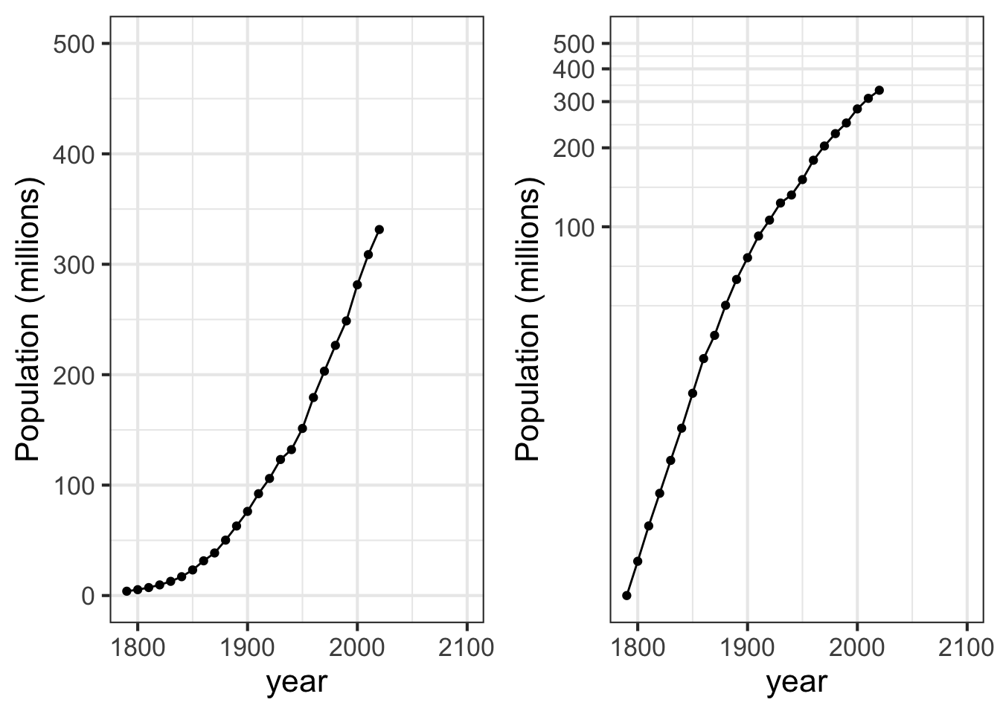
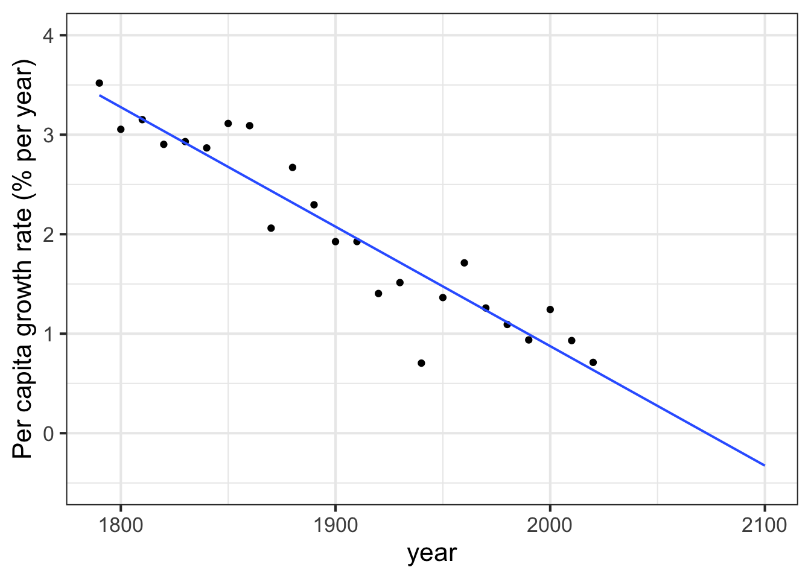

34 Change & accumulation
Every 10 years, starting in 1790, the US Census Bureau carries out a constitutionally mandated census: a count of the current population. The overall count as a function of year is shown in Figure 34.1. [Source]
In the 230 years spanned by the census data, the US population has grown 100-fold, from about 4 million in 1790 to about 330,000,000 in 2020.

It is tempting to look for simple patterns in such data. Perhaps the US population has been growing exponentially. A semi-log plot of the same data suggests that the growth is only very roughly exponential. A truly exponential process would present as a curve with a constant derivative, but the derivative of the function in the graph is decreasing over the centuries.
Insofar as the slope over the semi-log graph is informative, it amounts to this quantity: \[\partial_t \ln(\text{pop}(t)) = \frac{\partial_t\, \text{pop}(t)}{\text{pop}}\] This is the per-capita rate of growth, that is, the rate of change in the population divided by the population. Conventionally, this fraction is presented as a percentage: percentage growth in the population per year, as in Figure 34.2.
## Warning: Using the `size` aesthetic with geom_line was deprecated in ggplot2 3.4.0.
## ℹ Please use the `linewidth` aesthetic instead.

The dots in the graph are a direct calculation from the census data. There is a lot of fluctuation, but an overall trend stands out: the population growth rate has been declining since the mid-to late 1800s. The deviations from the trend are telling and correspond to historical events. There is a relatively low growth rate seen from 1860 to 1870: that is the effect of the US Civil War. The Great depression is seen in the very low growth from 1930 to 1940. Baby Boom: look at the growth from 1950-1960. The bump from 1990 to 2000? Not coincidentally, the 1990 Immigration Act substantially increased the yearly rate of immigration.
If the trend in the growth rate continues, the US will reach zero net growth about 2070, then continue with negative growth. Of course, negative growth is just decline. A simple prediction from Figure 34.2 is that the argmax of the US population—that is, the year that the growth rate reaches zero—will occur around 2070.
How large will the population be when it reaches its maximum?
In Block 2, we dealt with situations where we know the function \(f(t)\) and want to find the rate of change \(\partial_t f(t)\). Here, we know the rate of change of the population and we need to figure out the population itself, in other words to figure out from a known \(\partial_t f(t)\) what is the unknown function \(f(t)\).
The process of figuring out \(f(t) \longrightarrow \partial_t f(t)\) is, of course, called differentiation. The opposite process, \(\partial_t f(t) \longrightarrow f(t)\) is called anti-differentiation.
In this block we will explore the methods for calculating anti-derivatives and some of the settings in which anti-derivative problems arrive.
34.1 Accumulation
Imagine a simple setting: water flowing out of a tap into a basin or tank. The amount of water in the basin will be measured in a unit of volume, say liters. Measurement of the flow \(f(t)\) of water from the tap into the tank has different units, say liters per second. If volume \(V(t)\) is the volume of water in the tank as a function of time, \(f(t)\) at any instant is \(f(t) = \partial_t V(t)\).
There is a relationship between the two functions \(f(t)\) and \(V(t)\). With derivatives, we can give a good description of that relationship: \[f(t) = \partial_t V(t)\] This description will be informative if we have measured the volume of water in the basin as a function of time and want to deduce the rate of flow from the tap. Now suppose we have measured the flow \(f(t)\) and want to figure out the volume. The volume at any instant is the past flow accumulated to that instant. As a matter of notation, we write this view of the relationship as \[V(t) = \int f(t) dt,\] which you can read as “volume is the accumulated flow.”
Other examples of accumulation and change:
- velocity is the rate of change of position with respect to time. Likewise, position is the accumulation of velocity over time.
- force is the rate of energy with respect to position. Likewise energy is the accumulation of force as position changes.
- deficit is the rate of change of debt with respect to time. Likewise, debt is the accumulation of deficit over time.
34.2 Notation for anti-differentiation
For differentiation we are using the notation \(\partial_x\) as in \(\partial_x f(x)\). Remember that the subscript on \(\partial\) names the with-respect-to input. There are three pieces of information this notation:
- The \(\color{magenta}{\partial}\) symbol which identifies the operation as partial differentiation.
- The name of the with-respect-to input \(\partial_{\color{magenta}{x}}\) written as a subscript to \(\partial\).
- The function to be differentiated, \(\partial_x \color{magenta}{f(x)}\).
For anti-differentiation, our notation must also specify the three pieces of information. It might be tempting to use the same notation as differentiation but replace the \(\partial\) symbol with something else, perhaps \(\eth\) or \(\spadesuit\) or \(\forall\), giving us something like \(\spadesuit_x f(x)\).
Convention has something different in store. The notation for anti-differentiation is \[\large \int f(x) dx\] 1. The \(\color{magenta}{\int}\) is the marker for anti-differentiation. 2. The name of the with-respect-to input is contained in the “dx” at the end of the notation: \(\int f(x) d\color{magenta}{x}\) 3. The function being anti-differentiated is in the middle \(\int \color{magenta}{f(x)} dx\).
For those starting out with anti-differentiation, the conventional notation can be confusing, especially the \(dx\) part. It is easy confuse \(d\) for a constant and \(x\) for part of the function being anti-differentiated.
Think of the \(\int\) and the \(dx\) as brackets around the function. You need both brackets for correct notation, the \(\int\) and the \(dx\) together telling you what operation to perform.
Remember that just as \(\partial_x f(x)\) is a function, so is \(\int f(x) dx\).
34.3 R/mosaic notation
Recall that the notation for differentiation in R/mosaic is D(f(x) ~ x). The R/mosaic notation for anti-differentiation is very similar:
D(f(x) ~ x)This has the same three pieces of information as \(\partial_x f(x)\)
D()signifies differentiation whereasantiD()signifies anti-differentiation.~ xidentifies the with-respect-to input.f(x) ~is the function on which the operation is to be performed.
Remember that just as D(f(x) ~ x) creates a new function out of f(x) ~ x, so does antiD(f(x) ~ x).
34.4 Dimension and anti-differentiation
This entire block will be about anti-differentiation, its properties and its uses. You already know that anti-differentiation (as the name suggests) is the inverse of differentiation. There is one consequence of this that is helpful to keep in mind as we move on to other chapters. This being calculus, the functions that we construct and operate upon have inputs that are quantities and outputs that are also quantities. Every quantity has a dimension, as discussed in Chapter 16. When you are working with any quantity, you should be sure that you know its dimension and its units.
The dimension of the input to a function does not by any means have to be the same as the dimension of the output. For instance, we have been using many functions where the input has dimension time and the output is position (dimension L) or velocity (dimension L/T) or acceleration (dimension L/T\(^2\)).
Imagine working with some function \(f(y)\) that is relevant to some modeling project of interest to you. Returning to the bracket notation that we used in Chapter 16, the dimension of the input quantity will be [\(y\)]. The dimension of the output quantity is [\(f(y)\)]. (Remember from 16 that [\(y\)] means “the dimension of quantity \(y\)” and that [\(f(y)\)] means “the dimension of the output from \(f(y)\).”)
The function \(\partial_y f(y)\) has the same input dimension \([y]\) but the output will be \([f(y)] / [y]\). For example, suppose \(f(y)\) is the mass of fuel in a rocket as a function of time \(y\). The output of \(f(y)\) has dimension M. The input dimension \([y]\) is T.
The output of the function \(\partial_y f(y)\) has dimension \([f(y)] / [y]\), which in this case will be M / T. (Less abstractly, if the fuel mass is given in kg, and time is measured in seconds, then \(\partial_y f(y)\) will have units of kg-per-second.)
How about the dimension of the anti-derivative \(F(y) = \int f(y) dy\)? Since \(F(y)\) is the anti-derivative of \(f(y)\) (with respect to \(y\)), we know that \(\partial_y F(y) = f(y)\). Taking the dimension of both sides \[[\partial_y F(y)] = \frac{[F(y)]}{[y]} = \frac{[F(y)]}{\text{T}} = [f(y)] = \text{M}\] Consequently, \([F(y)] = \text{M}\).
To summarize:
- The dimension of derivative \(\partial_y f(y)\) will be \([f(y)] / [y]\).
- The dimension of the anti-derivative \(\int f(y) dy\) will be \([f(y)]\times [y]\).
Or, more concisely:
Differentiation is like division, anti-differentiation is like multiplication.
Paying attention to the dimensions (and units!) of input and output can be a boon to the calculus student. Often students have some function \(f(y)\) and they are wondering which of the several calculus operations they are supposed to do: differentiation, anti-differentiation, finding a maximum, finding an argmax or a zero. Start by figuring out the dimension of the quantity you want. From that, you can often figure out which operation is appropriate.
To illustrate, imagine that you have constructed \(f(y)\) for your task and you know, say, \[[f(y)] = \text{M and} \ \ \ \ \ [y] = \text{T}\ .\] Look things up in the following table:
| Dimension of result | Calculus operation |
|---|---|
| M / T | differentiate |
| M T | anti-differentiate |
| M | find max or min |
| T | find argmax/argmin or a function zero |
| M T\(^2\) | anti-differentiate twice in succession |
| M / T\(^2\) | differentiate twice in succession |
For example, suppose the output of the accelerometer on your rocket has dimension L / T\(^2\). You are trying to figure out from the accelerometer reading what is your altitude. Altitude has dimension L. Look up in the table to see that you want to anti-differentiate acceleration twice in succession.
34.5 From Calculus Made Easy
Calculus Made Easy, by Silvanus P. Thompson, is a classic, concise, and elegant textbook from 1910. It takes a common-sense approach, sometimes lampooning the traditional approach to teaching calculus.
Some calculus-tricks are quite easy. Some are enormously difficult. The fools who write the textbooks of advanced mathematics—and they are mostly clever fools—seldom take the trouble to show you how easy the easy calculations are. On the contrary, they seem to desire to impress you with their tremendous cleverness by going about it in the most difficult way. — From the preface
Thompson’s first chapter starts with the notation of accumulation, which he calls “the preliminary terror.”
The preliminary terror … can be abolished once for all by simply stating what is the meaning—in common-sense terms—of the two principal symbols that are used in calculating.
These dreadful symbols are:
- \(\Large\ d\) which merely means “a little bit of.”
Thus \(dx\) means a little bit of \(x\); or \(du\) means a little bit of \(u\). Ordinary mathematicians think it more polite to say “an element of,” instead of “a little bit of.” Just as you please. But you will find that these little bits (or elements) may be considered to be indefinitely small.
- \(\ \ \large\int\) which is merely a long \(S\), and may be called (if you like) “the sum of.”
Thus \(\ \int dx\) means the sum of all the little bits of \(x\); or \(\ \int dt\) means the sum of all the little bits of \(t\). Ordinary mathematicians call this symbol “the integral of.” Now any fool can see that if \(x\) is considered as made up of a lot of little bits, each of which is called \(dx\), if you add them all up together you get the sum of all the \(dx\)’s, (which is the same thing as the whole of \(x\)). The word “integral” simply means “the whole.” If you think of the duration of time for one hour, you may (if you like) think of it as cut up into \(3600\) little bits called seconds. The whole of the \(3600\) little bits added up together make one hour.
When you see an expression that begins with this terrifying symbol, you will henceforth know that it is put there merely to give you instructions that you are now to perform the operation (if you can) of totaling up all the little bits that are indicated by the symbols that follow.
The next chapter shows what it means to “total up all the little bits” of a function.
34.6 Exercises
Exercise 34.01
**Part A** What is the name of the with-respect-to input in $\int g(y) dy$? y dy x t
**Part B** What is the name of the with-respect-to input in $\int g(t) dy$ y dy x t
**Part C** What is the name of the with-respect-to input in $\int g(x, t) dt$ y dt x t
Exercise 34.02
**Part A** Which of the following functions is $\int \left[a + bx \right] dx$? (Hint: Differentiate each of them until you find the one that matches $a + bx$.) - \(ax + \frac{1}{2}b x^2 + C\)
- \(ax + 2 b x^2 + C\)
- \(a + b x^2 + C\)
**Part B** Which of the following functions is $\int e^{-kx} dt$? \(-e^{-kx}\,/\,k\) \(- k e^{-k x}\) \(e^{-kx}\,/\,k\)
Exercise 34.03
Every function has an anti-derivative. But there are many functions, for example \(\dnorm()\) where there is no formula for the anti-derivative. Even so, the R/mosaic antiD() operator will figure out what is the anti-derivative.
For each of the following functions, use makeFun() to implement the function as f(). Then use antiD() to construct the anti-derivative of f() and give this the name F(). Finally, use D() to compute the derivative of F(). For instance:
f <- makeFun(x*dnorm(x) ~ x)
F <- antiD(f(x) ~ x)
dF <- D(F(x) ~ x)
slice_plot(f(x) ~ x, bounds(x=0:10)) %>%
slice_plot(dF(x) ~ x, color="blue", size=3, alpha = 0.2)**Part A** For the function $f(x) \equiv \pnorm(x^2)$, what is $F(5)$? (Pick the closest answer.) 4 4.5 5 5.5 6 6.5
**Part B** For the function $f(x) \equiv \sin(x) \ln(x^2)$, what is $F(5)$? (Pick the closest answer.) -4 -3.5 -3 -2.5 -2
**Part C** For the function $f(x) \equiv x^2 \pnorm(x)$, what is $F(5)$? (Pick the closest answer.) 35 37 39 41 43
Exercise 34.04
In the population prediction model at the start of the chapter we want to find a function \(P(y)\) that gives the population as a function of year \(y\). From the data, we plotted out \(\ln\left[P(y)\right]\) and found a fairly smooth curve that was upward sloping and concave down. Next, we made a plot of the derivative with respect to year of that upward-sloping, concave-down curve and found the derivative to be well approximated by a straight-line function with a negative slope \(a - b y\). In other words, we found \[\partial_y \ln(P(y)) = a - b\,y\] We want to figure out \(P(y)\) from this relationship.
Step 1: Anti-differentiate the functions on both sides of the equation. Anti-differentiation has the effect of cancelling out the \(\partial_y\) from the left side of the equation. Anti-differentiating the right side means calculating \(\int \left[a - b\, y\right]\ dy\).
Task 1: Confirm that \(\int \left[a - b\,y\right]dy = a y - \frac{1}{2} b y^2 + C\).
Step 2: From Step 1 we have translated the relationship between population and year into this form:
\[\ln(P(y)) = a y - \frac{1}{2} b y^2 + C\]
Task 2: Exponentiate both sides of the newly framed relationship to get \[P(y) = \exp\left(a y - \frac{1}{2} b y^2 + C\right) = e^{ay -b y^2} e^C = A e^{ay -b y^2}\] where \(A = e^C\).
Step 3: Let’s declare that \(y=0\) means year 2020.
Task 3: Find the census estimate of the population in 2020 and use that information to estimate the parameter \(A\) in \(P(y) = A e^{ay-b y^2}\).
Step 4: The per-capita growth rate is \[G(y) \equiv \frac{\partial_y P(y)}{P(y)} \approx \frac{\partial_y A e^{a y - b y^2}}{A e^{ay - b y^2}} = a - 2 b y\] The data suggest that the current growth rate is about 1% per year, so \(G(0) = a = \approx 0.01\). We also know that the growth rate will be around zero in 2070 years time. Year 2070 corresponds to \(y=50\). Consequently, \(G(50) = 0.01 - 2\cdot 50\cdot b\approx 0\). You can easily solve this for \(b\).
Task 4: You now have numerical estimates for the parameters \(A\), \(a\), and \(b\) in the function \(P(y)\). Using these parameters, plot out \(P(y)\) for the next 200 years. According to the prediction, what will be the population in year 2220?
# Fill in your estimates for A, a, and b.
P <- makeFun(A*exp(a*y - b*(y^2)) ~ y,
a = ____, b = ____, A = ____)
# y = 200 is year 2220.
slice_plot(P(y) ~ y, bounds(y=c(0,200)))
# At y=200, the estimate is 50 MExercise 34.05

The graph shows a function \(f(x)\). Like all functions, it has an anti-derivative. Here are several functions, \(F_1(x)\) through \(F_4(x)\).
One and only one is the anti-derivative of the function shown in the graph. Which one?
F1 <- doodle_fun(~ x, seed = 782)
F2 <- doodle_fun(~ x, seed = 934)
F3 <- doodle_fun(~ x, seed = 297)
F4 <- doodle_fun(~ x, seed = 892)NOTE: doodle_fun() is a program that generates functions, a different one for each seed. It has been used here to generate F1() through F4() for you to use. Once you run those four lines in your sandbox, you can use slice_plot() in the usual way to plot out any of the four functions over the domain \(-5 \leq x \leq 5\).
**Part A** Confirming graphically that a candidate $F_i(x)$ is indeed the anti-derivative of $f(x)$ is hard because the two functions can have very different shapes. But there is a very simple operation you can apply to $F_i(x)$ to make the comparison trivial. What is this operation? - anti-differentiate \(F_i(x)\)
- differentiate \(F_i(x)\)
- compose \(f(x)\) with itself
- multiply \(F_i(x)\) times $f(x)
**Part B** Which one of the functions is an anti-derivative of the function graphed above? (Hint: See the next problem.) F1() F2() F3() F4()
Problem with Accumulation Exercises/frog-choose-coat.Rmd
Exercise 34.07
**Part A** What is the anti-derivative of Force with respect to distance? Acceleration Work/Energy Momentum Power
**Part B** What is the anti-derivative of Velocity with respect to time? Momentum Displacement Power Acceleration